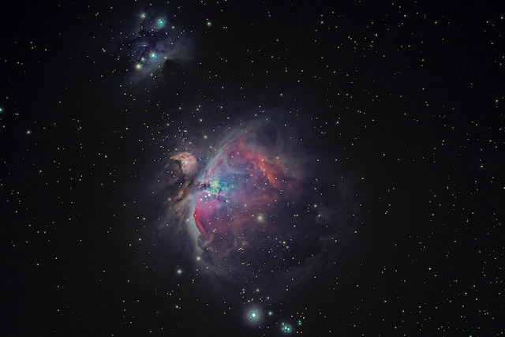
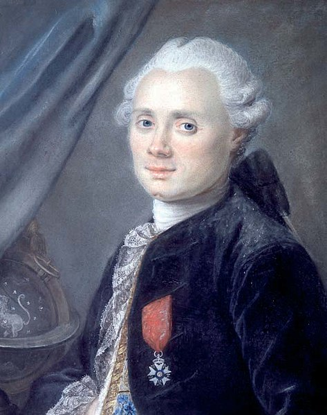

Messier Objects

What is a Messier Object?
A Messier Object is a deep sky object, such as galaxies, nebulae, and star clusters. Charles Messier created a list of 110 of these objects that was published in 1774.
Who is Charles Messier?
Charles Messier was a French astronomer who lived from 1730 to 1817. He spent his time searching for and cataloguing comets. While doing this, he encountered many objects that looked like comets, but didn’t move. He created a list of these objects so that he and other comet hunters wouldn’t waste their time looking at them. This list eventually became known as the Messier Catalogue and is used by astronomers to this day.
